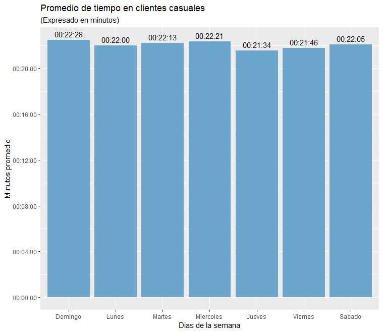
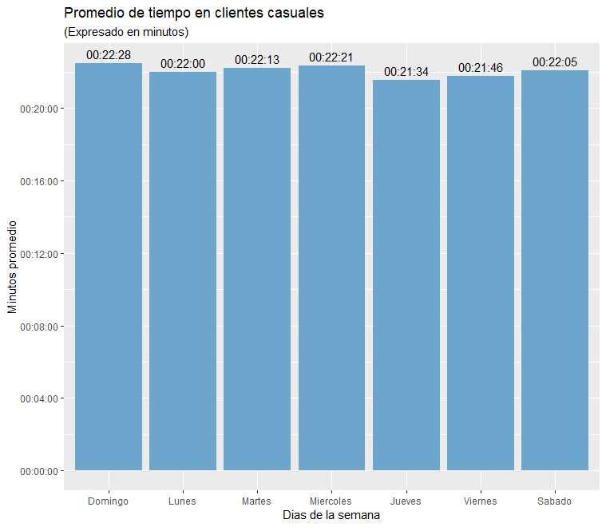
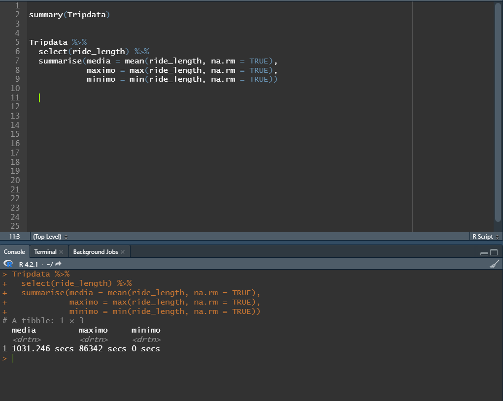
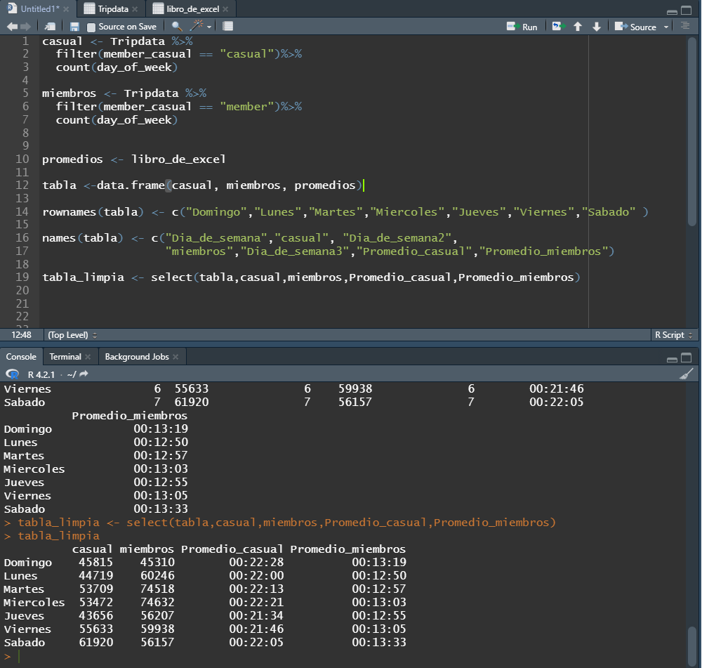
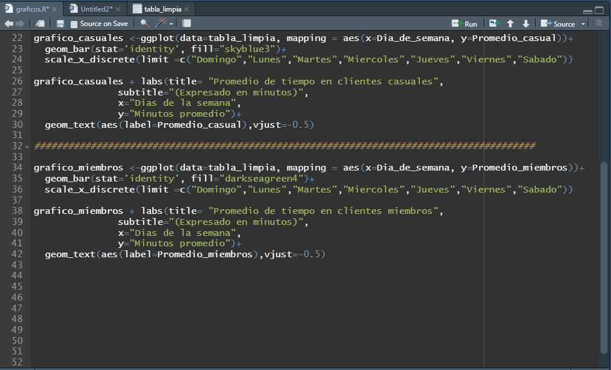

Cantidad de clientes casuales y miembros por día de la semana
La grafica muestra la predominancia de los usuarios abonados durante los días de semana, reflejando ese porcentaje considerablemente alto de cliente que lo utilizan para ir a trabajar o trabajar con la bicicleta, mostrando así una caída hacia el fin de semana y tomando preponderancia los clientes casuales usando el servicio los días de fin de semana de forma recreativa, principalmente viernes y sábados.

Promedio de uso diario de clientes miembros y casuales
 

Los clientes casuales, aunque apenas superan en cantidad un solo día que es el viernes poseen una cantidad considerable de tiempo mas alto que los abonados fortaleciendo así el punto de que los casuales lo usan de forma recreativa y los abonados para ir de un punto A al punto B.
Conclusión: a través del promedio de utilización se puede deducir que los clientes casuales usan las bicicletas para actividades recreativas tendiendo así la suba de clientes casuales entre viernes y sábado, no así los clientes miembros que lo usan en su mayoría para tareas específicas.
Recomendaciones para captar al publico casual y poder brindarles membresías:
- Incorporar membresías mensuales y no restringir solo a membresías anuales, eso puede ahuyentar a clientes que necesitan las bicicletas solo por temporadas.
- Crear membresías de fin de semana ejemplo (viernes, sábado, domingo) y hacer descuento por familias
- Crear membresías especiales con descuentos para clientes que la usan solo para trabajar.
- Crear membresía flexible, consiste en una membresía mensual en la cual el cliente informa los días del mes en que usara la bicicleta. Serviría para clientes que por ejemplo trabajan hibrido y no van todos los días a la oficina o clientes que usan el servicio para ciertas tareas específicas en ciertos días de la semana.
Fuente de datos: divvy-tripdata.s3.amazonaws.com/index.html
Nombre del Dataset: 202208-divvy-tripdata
Aclaración: Los conjuntos de datos tienen un nombre diferente porque Cyclistic es una empresa ficticia.
A los fines de este caso práctico, los conjuntos de datos son apropiados y te permitirán responder las preguntas de la empresa.
Los datos han sido proporcionados por Motivate International Inc.
Proceso de clasificación, limpieza, clasificación y visualización de los datos:
1) Se limpiaron los datos en Excel quitando duplicados, corregir errores estructurales, limpiar valores no deseados y revisar celdas vacías. Al dataset original se agregaron las columnas:
2) Sacar la media, los máximos y los mínimos.
3) Creación de una tabla limpia tomando solo los datos relevantes.
4) Gráficos de los promedios de uso por clientes casuales y abonados.
